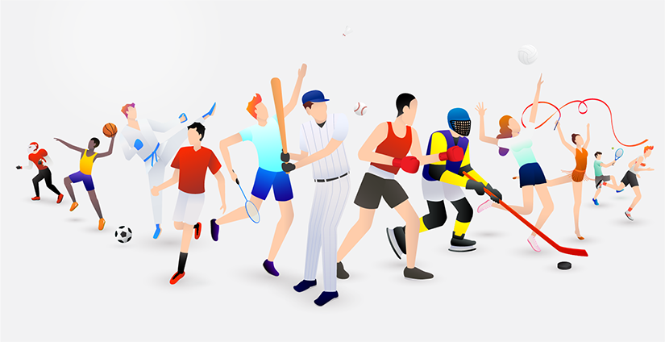

Durante a nossa vida escutamos sobre os benefícios da prática de esportes,
A prática de esportes na juventude é muito importante para o desenvolvimento físico, mental e social.
Ela melhora o condicionamento físico, fortalece o corpo e ajuda a prevenir doenças.
Além disso, contribui para a autoestima, disciplina e redução do estresse.
O jiu-jitsu, em especial, ensina respeito, autocontrole e perseverança.
Também melhora a resistência física e ajuda os jovens a desenvolverem confiança e responsabilidade.
Assim, o esporte contribui para uma formação mais saudável e equilibrada.
Além desses benefícios no jiu-jitsu, temos:
